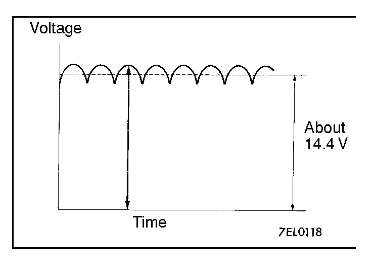
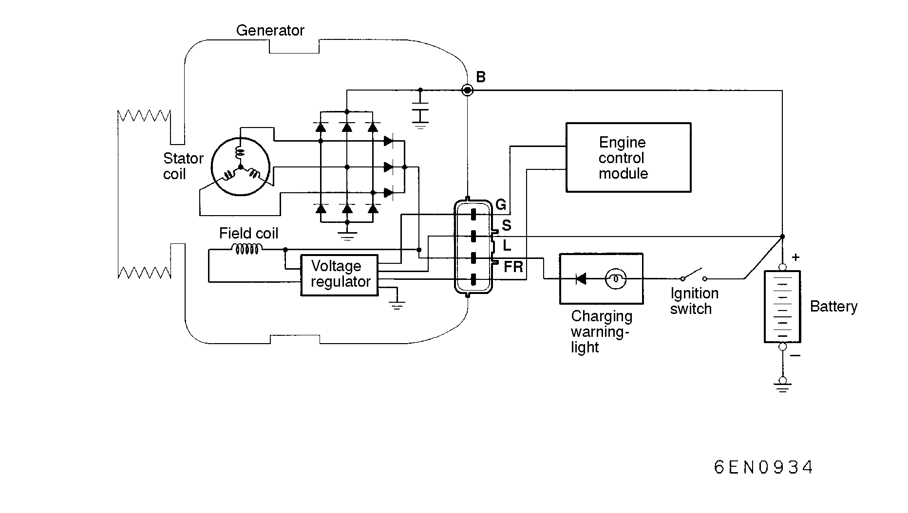

![[Previous]](https://mitsubishitechinfo.com/data/F24S/BUTTONS/fprevg.png)
![[Next]](https://mitsubishitechinfo.com/data/F24S/BUTTONS/fnextg.png)
CHARGING SYSTEM
<2.0L ENGINE (TURBO) AND 2.4L ENGINE>
GENERAL INFORMATION
The charging system uses generator output to keep the battery charged at a constant level under various electrical loads.
GENERATOR SPECIFICATIONS
|
Items |
M/T |
2.0L Engine (A/T) |
2.4L Engine (A/T) |
| Type |
Battery voltage sensing |
Battery voltage sensing |
Battery voltage sensing |
| Identification No. |
A2TA0891 |
A2TA0892 |
A2T82791 |
| Part No. |
MD313392 |
MD327513 |
MD310997 |
| Rated output V/A |
12/75 |
12/75 |
12/90 |
| Voltage regulator |
Electronic built-in type |
Electronic built-in type |
Electronic built-in type |
|
|

|
Operation
Rotation of the excited field coil generates AC voltage in the stator.
This alternating current is then rectified through diodes to procedure DC voltage. Refer to the waveform shown in the illustration at left.
The average output voltage fluctuates slightly with the generator load condition. |
|
When the ignition switch is turned on, current flows in the field coil, causing initial excitation of the field coil.
When the stator coil begins to generate power after the engine is started, the field coil is excited by the output current of the stator coil.
The generator output voltage rises as field current increases and falls as field current decreases. When the battery voltage (generator S terminal voltage) reaches a regulated voltage of approx. 14.4V, the field current is cut off. When the battery voltage drops below the regulated voltage, the voltage regulator regulates the output voltage to a constant level by controlling the field current.
In addition, when the field current is constant, the generator output voltage rises as the engine speed increases.

When engine is stopped
When the ignition switch is switched to the "ON" position, electricity flows from the "L" terminal of the generator to the rotor coil (field coil), and at the same time the charging warning light illuminates.
When engine is being started/has started
When the engine is started, charging voltage is applied to the "L" terminal of the generator, with the result that the charging warning light is extinguished.
In addition, because battery voltage is applied to the "S" terminal of the generator, this battery voltage is monitored at the IC voltage regulator, thus switching ON and OFF the current to the rotor coil (field coil) and thereby controlling the output voltage of the generator.
Power is supplied to each load from the "B" terminal of the generator.
NOTE
The generator relay functions as a back-up for the flow of electricity to the rotor coil (field coil) if there is a disconnection or damaged wiring of the charging warning light.
<Charging system warning light>
This warning light illuminates when the ignition key is in "ON" position, and goes off after the engine has started. This indicator comes on when the drive belt breaks or the trouble occurs in the charging system.